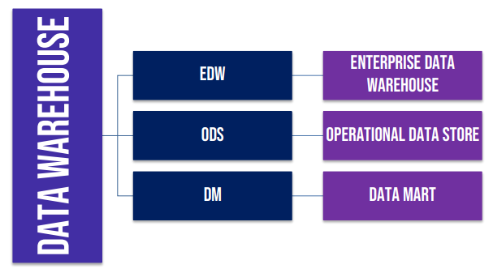

Aula 00 - Conceitos Básicos de Banco de Dados
Banco de Dados: Coleção de dados relacionados.
➥Pode ter qualquer tamanho e pode ser implementado de forma manual ou automatizada.
SGBD: Sistema Gerenciador de Banco de Dados
➥Conjunto de Programas que permite criar e manter um banco de dados.
- Definição: processo que envolve especificar os tipos, estruturas e restrições dos dados a serem armazenados;
- Construção: processo que envolve armazenar os dados em algum meio controlado pelo SGBD;
- Manipulação: processo que inclue funções como consulta - para recuperar dados específicos; atualização para refletir mudanças no minimundo; e geração de relatórios;
- Compartilhamento: processo que permite que diversos usuários e programas acesse um banco de dados simultâneamente;
- Proteção: processo que inclue a proteção do sistema contra defeitos (ou falhas) de hardware ou software, e proteção de segurança contra acesso não autorizado;
- Manutenção: processo que permite a evolução à medida que os requisitos mudam com o tempo, uma vez que um banco de dados pode ter um ciclo de muitos anos.
Aplicações: São sistemas, programas ou softwares que enviam consultas ou solicitações a um SGBD, que por sua vez, acessa um BDBanco de Dados. Uma aplicação recebe entradas que serão entregues ao SGBD e este manipulará o Banco de Dados que executará o comando solicitado.
SBD: A união do BD com SGBD é chamada de Sistema de Banco de Dados (SBD)
SBD = SGBD + BD + [Aplicações]
Tipos de Bancos de Dados
Os tipos de BDBanco de Dados mais comuns atualmente são:
Banco de dados não-relacional - são também conhecidos como bancos de dados de arquivo. Neles todos os dados são armazenados em uma única tabela, armazenada em um único arquivo.
Banco de dados relacional - são formados por várias tabelas que se relacionam entre si.
Banco de dados orientados a objetos - utilizam para o armazenamento dos dados os conceitos de orientação a objetos.
Características Básicas do Banco de Dados Relacional
a) Natureza de autodescrição de um SBDSistema de Banco de Dados
➥São os metadados das tabelas.
b) Isolamento entre programas e dados, e abstração de dados
➥Os dados ficam bem separados das aplicações.
c) Suporte a múltiplas visões de dados
➥Várias aplicações podem consultar o BDBanco de Dados simultâneamente.
d) Compartilhamento de dados e processamento de transação
➥Garantir que vários usuários interajam simultâneamente com o BDBanco de Dados.
Transação
Cada atividade realizada em um BDBanco de Dados é um transação.
Elas apresentam as seguintes características básicas:
ACID - Atomicidade, Consistência, Isolamento e Durabilidade
Atomicidade: Uma transação é uma unidade de processamento atômica que deve ser executida integralmente até o fim ou não deve ser executada.
Consistência: A execução de uma transação deve levar o banco de dados de um estado consistente a um outro estado consistente.
Isolamento: Cada transação deve parecer executar isoladamente das demais, embora diversas transações possam estar executando concorrentemente.
Durabilidade: Os efeitos de uma transação em caso de sucesso devem persistir no banco de dados mesmo em casos de quedas de energia, travamento ou erros.
Personagens
Administrador de Banco de Dados (DBA): é o profissional com a visão mais técnica, mais preocupado com o funcionamento e perfomance do BDBanco de Dados do que com o significado dos dados. Entre as suas responsabilidades estão: instalação do SGBD, análise de performance, autorização de acessos, gerência dos backups, solicitação de aquisição de hardware e software necessários conforme a demanda.
Administrador de Dados (AD): é o profissional com a visão mais gerencial, mais preocupado com os dados em si.
Responsabilidades: definir os dados a serem persistidos, desenvolver o projeto e a modelagem do BDBanco de Dados, manutenir os dados e gerenciar a atualização dos mesmos.
Arquitetura ANSI/SPARC - Três Esquemas
Na informática existe uma grande preocupação com padrões, era necessário padronizar a representação dos dados e o nível de abstração necessário em cada visão de acordo com o usuário alvo.
Em 1975, um instituto americano sugeriu a Arquitetura ANSI/SPARC para padrões de organização de SGBD e ela é dividida em três níveis independentes:
- Externo
- Conceitual
- Interno
OBS: maior abstração = menos detalhes / menor abstração = mais detalhes
Dois conceitos básicos necessários:
Esquema ⇨ descrição da estrutura dos dados e do banco de dados.
Ex: tabelas, campos, visões e índices
Instância ⇨ é o dado em si. A visão dos dados no banco de dados em um determinado instante.

a) Nível Externo ⇨ Também chamado de Nível de Visualização ou Nível Lógico do Usuário.
Três pontos importantes:
- Esse nível se comunica diretamente com o usuário, ou seja, faz interface direta com os usuários;
- Exibe apenas a parte do BDBanco de Dados relevante para um usuário e oculta as demais;
- Apresenta uma visão externa individual e independente para cada usuário final.
b) Nível Conceitual ⇨ Também chamado de Nível Lógico.
- Ele descreve todo o banco de dados e define quais dados estão armazenados e quais são as relações entre esses.
- Ele oculta os detalhes das estruturas de armazenamento físico e se concentra na descrição das entidades.
c) Nível Interno ⇨ Também chamado de Nível de Armazenamento ou Físico. Mais longe dos usuários.
- Modo como os dados estão fisicamente armazenados no banco de dados, com o hardware do computador e com o desempenho final da estrutura física.
- Descreve os detalhes completos do armazenamento de dados e dos caminhos de acesso para o banco de dados.
ANSI/SPARC
A maioria dos SGBD não separa os três níveis de maneira completa ou explícita, mas dá suporte a eles.
Os mapeamentos são importantes para ajudar a garantir a independência dos dados, que é a capacidade de que uma alteração em uma definição dos esquemas de determinado nível, não afetem o esquema de nível superior.
Independência lógica dos dados ⇨ Trata da capacidade de alterar o esquema conceitual sem modificar os esquemas externos ou programas/aplicações.
Independência física dos dados ⇨ Trata da capacidade de alterar o esquema interno sem alterar o esquema conceitual e consequentemente os externos.
Projetos de Banco de Dados

Aula 01 - Banco de Dados Relacionais
Modelo Conceitual
A modelagem do BDBanco de Dados é um passo EXTREMAMENTE importante, pois um processo mal feito pode gerar danos que se propagam por várias partes do projeto.
Tudo começa com um processo chamado Coleta de Requisitos e, com base nisso, é criado o modelo conceitual que será detalhado para gerar o modelo lógico e que, por sua vez, será detalhado para gerar o modelo físico.
Nesse contexto, o Modelo Conceitual pode ser implementado pelo Modelo Entidade-Relacionamento - MER (mas existem outras implementações do Modelo Conceitual de dados, tais como Notação IDEF1X, Notação de Barker e Notação Pé-de-Galinha) e o Modelo Lógico pode ser implementado pelo Modelo Relacional.
O MER é representado pelo Diagrama Entidade-Relacionamento.
Modelo Entidade-Relacionamento
Entidade: Um objeto que existe e que pode ser distinguido de outros objetos.
➥Ela é representada por um retângulo.
➥Uma ocorrência específica de uma entidade é uma instância.
➥Tipos: Entidade Forte, Entidade Fraca e Entidade Associativa
Entidade Forte (independente): Representado por um retângulo, são aquelas cuja existência independe de outras entidades. Possui atributos que o identificam univocamente.

Entidade Fraca (dependente): Representado por um duplo retângulo, são aqueles cuja existência depende de outra entidade e que não podem ser identificados unicamente apenas por seus atributos.

Entidade Associativa: É a redefinição de um relacionamento, passando a ser considerado uma entidade.

Relacionamento: É uma associação ou interação entre entidades; a ligação lógica que demonstra o comportamento, a dependência e a associação de dados entre elas ou uma restrição de negócio.

Relacionamentos fortes: Acontecem entre entidades fortes.

Relacionamentos fracos: Acontecem entre entidade forte e fraca.

Os relacionamentos podem se classificar:
a) Quanto ao grau: Indica a quantidade de entidades que participam de um relacionamento e pode ser binário, ternário, quaternário, entre outros.
b) Quanto à cardinalidade: Indica a quantidade de ocorrências (instâncias) de cada entidade no relacionamento. Podem ser 1:1, 1:N, N:1 e M:N.
- 1:1 (um-para-um)
- 1:N (um-para-muitos)
- N:M (muitos-para-muitos)


Restrições de Participação
Restrição de participação total: Tota entidade A deve possuir uma ou mais entidade associada a ela. Cardinalidade mínima é 1 (1:1 ou 1:N)
Restrição de participação parcial: Nem toda entidade A deve possuir uma entidade associada a ela. Cardinalidade mínima é 0 (0:1 ou 0:N)
Entidade Associativa
Geralmente ocorre em N:M
Atributos: Indicam as propriedades e características de uma entidade.

Os atributos podem ser:
Monovalorado quando possui apenas um valor ou multivalorado quando possui mais de um valor.
Simples quando é atômico e composto quando pode ser subdividido em outros atributos.
Derivado (idade) ou Armazenado (data de nascimento)
Identificador: atributo que identifica a entidade como única. São representados por um círculo preenchido ou sublinhado.
Quadro de resumo das notações:

Aula 02 - Modelo Lógico
Modelo menos abstrato que o Conceitual e mais próximo da modelagem física.
Modelo Relacional (é um modelo lógico)
➥O modelo de dados trata da representação conceitual dos dados fisicamente armazenados e é capaz de representar dados por meio de uma linguagem matemática, utilizando teoria de conjuntos e lógica de predicado de primeira ordem.
Introduziu técnicas de consultas simplificadas e uma maior facilidade de interação com o BDBanco de Dados.
1. Tabelas
➥Os elementos são dispostos em tabelas, formadas por linhas e colunas, onde as tabelas devem representar elementos do mundo real, as colunas indicam qualidades desses elementosatributos e as linhas agrupam valores que representam um fato do mundo real.
| Aluno | ||
| COD | Nome | Data Nascimento |
| 01 | Maria | 01/01/1982 |
| 02 | João | 02/02/1980 |
| 03 | Pedro | 03/03/1974 |
| Colunas (campos) / Linha (registro ou tupla) | ||
Na terminologia formal, a tabela é chamada de relação, as linhas são chamadas de tuplas, as colunas são chamadas de atributos e o tipo de dado a ser armazenado é chamado de domínio.

a) A ordenação das tuplas na relação: uma relação é definida como um conjunto de tuplas, ou seja, um conjunto de elementos não duplicados que não possuem ordem entre si, podendo ser ordenadas de acordo com a necessidade do usuário.
b) Ordem dos valores nas tuplas é uma definição alternativa de uma relação: a ordenação dos atributos/colunas pode ser relevante dependendo do nível de abstração.
c) Valores e Null nas tuplas: Cada valor em uma tupla é um valor atômico, ou seja, ele não é divisível em componentes dentro da estrutura básica do modelo relacional, não sendo permitidos atributos compostos ou multivalorados. Quando um campo não for preenchido por inexistência do valor ou por desconhecimento, assumirá o valor NULL.
d) Interpretação de uma relação: O esquema de relação pode ser interpretado como uma declaração ou um tipo de afirmação (ou asserção), onde cada tupla na relação pode então ser interpretada como um fato ou uma instância em particular da afirmação. Algumas relações podem representar fatos sobre entidades e outras sobre relacionamentos.
2. Álgebra Relacional
➥A álgebra relacional foi adotada por Codd como a base das linguagens de consulta de banco de dadosSQL, sendo uma linguagem de consulta formal, ou seja, uma coleção de operações de alto nível sobre relações ou conjuntos cujo resultado seja uma nova relação ou conjunto.
As operações são: Seleção, Projeção, Produto Cartesiano, União, Diferença, Junção e Intersecção. Sendo as cinco primeiras primitivas (não podem ser obtidas a partir de outras) e as duas últimas derivadas.
a) Seleção: Trata-se de uma operação unáriauma relação (tabela) que filtra as linhas de uma tabela que satisfazem um conjunto de condições ou predicados.
Seleção (σ) = Puxa as tuplas inteiras
| Aluno | |||
| COD | Nome | CPF | Sexo |
| 01 | Maria | 111111-1 | F |
| 02 | João | 222222-2 | M |
| 03 | Pedro | 333333-3 | F |
| σ Sexo = "F" (Aluno) | |||
b) Projeção: Trata-se de uma relação unária que seleciona as colunas especificadas de todas as linhas da relação, excluindo as linhas duplicadas do resultado (chamadas de duplicatas). Em contraste com a operação de Seleção - que seleciona as linhas que satizfazem uma condição -, a operação de Projeção projeta as colunas especificadas na lista de atributos.
Projeção (π) = Exclui as linhas duplicadas
| Aluno | ||
| COD | Nome | Sexo |
| 01 | Maria | F |
| 02 | João | M |
| 03 | Ana | F |
| 04 | João | M |
| Projeção (π) | ||
| (π) COD | (π) Nome | (π) Sexo |
| 01 | Maria | F |
| 02 | João | M |
| 03 | Ana | F |
| 04 | João | M |
João não foi excluido porque as linhas não são exatamente iguais. O COD é diferente.
c) Produto Cartesiano: Também chamado de Produto Cruzado ou Junção Cruzada, trata-se de uma operação binária que produz um resultado que combina as linhas de uma tabela com as linhas de outra tabela. Notem que o resultado contempla todas as combinações das duas tabelas. Além disso, a quantidade de colunas é igual à soma das colunas das tabelas e a quantidade de linhas é igual ao produto da quantidade de linhas de cada tabela.
| Aluno | ||
| COD | Nome | |
| 01 | Ana | |
| 02 | João | |
| Turma.Aluno | |
| CODT | NomeT |
| 01 | PF |
| 02 | RF |
| Aluno x Turma | |||
| CODA | Nome | CODT | NomeT |
| 01 | João | 01 | PF |
| 01 | João | 02 | RF |
| 02 | Ana | 01 | PF |
| 02 | Ana | 02 | RF |
d) Junção: É uma operação binária que produz um resultado que combina as linhas de uma tabela com as linhas de outra tabela, onde as colunas duplicadas são removidas.
Junção (⋈)
| Aluno | ||
| CODA | Nome | Sexo |
| 01 | Ana | F |
| 02 | Maria | F |
| 03 | João | M |
| Turma.Aluno | |
| Nome | CODA |
| PF | 01 |
| RF | 02 |
| PF | 03 |
| Aluno ⋈ CODA = CODA Turma.Aluno | |||
| CODA | Nome | Sexo | NomeT |
| 01 | Ana | F | PF |
| 02 | Maria | F | RF |
| 03 | João | M | PF |
e) União: É uma operação binária que produz como resultadao uma nova tabela que contém todas as linhas da primeira tabela seguidas de todas as linhas da segunda tabela.
A tabela resultante possui a mesma quantidade de colunas que as tabelas originais, e tem um número de linhas que é o máximo - igual à soma das linhas de ambas as tabelas - Essa operação só pode ser realizada se as tabelas possuírem a mesma estrutura: mesma quantidade de colunas e as colunas devem possuir o mesmo domínio.
União (U)
| Aluno | ||
| Aluno | Sexo | |
| Max | M | |
| Ana | F | |
| Maria | F | |
| João | M | |
| Professor | |
| Professor | Sexo |
| Adriana | F |
| Manu | F |
| Bruno | M |
| Hebert | M |
| Aluno U Professor | |||
| Nome | Sexo | ||
| Max | M | ||
| Ana | F | ||
| Maria | F | ||
| João | M | ||
| Adriana | F | ||
| Manu | F | ||
| Bruno | M | ||
| Hebert | M | ||
f) Interseção: É uma operação binária que produz como resultado uma tabela que contém, sem repetições, todos os elementos que são comuns às duas tabelas fornecidas como operando. É importante ressaltar que a mesma restrição que valia para a operação União também vale para a operação Intersecção.
Interseção (∩)
| Aluno | ||
| Nome | CPF | Data Nascimento |
| Juliana | 111111-1 | 10/10/1974 |
| Ana | 222222-2 | 05/05/1970 |
| Max | 333333-3 | 03/03/1990 |
| Professor | ||
| Nome | CPF | Data Nascimento |
| Juliana | 111111-1 | 10/10/1974 |
| Renato | 444444-4 | 05/05/1986 |
| Diego | 666666-6 | 04/04/1970 |
| Aluno ∩ Professor | ||
| Nome | CPF | Data Nascimento |
| Juliana | 111111-1 | 10/10/1974 |
g) Diferença: É uma operação binária que produz como resultado uma tabela que contém todas as linhas que existem na primeira tabela e não existem na segunda tabela.
Diferença (-) = TabelaA - TabelaB
| Aluno | ||
| Nome | CPF | Data Nascimento |
| Maria | 666666-6 | 01/01/1982 |
| João | 55554-4 | 02/02/1970 |
| Juliana | 111111-1 | 10/10/1974 |
| Antonio | 222222-2 | 10/10/1974 |
| Professor | ||
| Nome | CPF | Data Nascimento |
| Renato | 555555-4 | 05/05/1986 |
| Juliana | 111111-1 | 10/10/1974 |
| Max | 123456-5 | 10/10/1974 |
| Antonio | 457856-9 | 05/05/1980 |
| Aluno - Professor | ||
| Nome | CPF | Data Nascimento |
| Maria | 666666-6 | 01/01/1982 |
| João | 55554-4 | 02/02/1970 |
| Antonio | 222222-2 | 10/10/1974 |
Tupla da Juliana era a única que se repitia na TabelaB.
Tabela com Resumo das operações no Modelo Relacional

# Vale lembrar que uma operação é dita comutativaordem dos fatores não altera o resultado quando a sua ordem é indiferente. Das operações vistas, apenas a projeção e diferença não são comutativas.
3. View
➥Uma visão é um objeto que não armazena dados, ela é um conjuntgo de dados agrupados e criados como resultado de uma consulta a estrutura física (tabelas). Elas não fazem parte do esquema físico, é uma espécie de "tabela virtual" computada ou coletada dinamicamente dos dados no banco de dados todas as vezes que o acesso àquela visão for solicitado.
Sendo assim, alterações feitas em dados das tabelas, serão automaticamente refletidos nas visões.
Suas principais vantagens são:
- Aumentar a segurança pois propicia uma visão limitada e controlada dos dados.
- Aumenta a performance porque utiliza uma consulta previamente otimizada e evita a busca dessa função de dados dinamicamente no BDBanco de Dados.
- Pode restringir o acesso aos usuários.
- Simplifica a interação entre usuário final e o banco de dados.
OBS: temos ainda a View Materializada que é armazenada de forma não volátil. Tem um melhor desempenho visto que o seu resultado já fica armazenado no banco de dados.
4. Indices
➥São referências associativas as chaves e são utilizados para otimizar buscas, pois permite a localização mais rápida de um registro em uma tabela, para isso, cria ponteiros para os dados armazenados em colunas específicas.
Seria a mesma ideia de usar o índice de um livro para facilitar o acesso a uma parte de um livro.
5. Chave
➥As chaves são muito importantes no bancos relacionais.
Principais tipos:
a) Superchave: é um conjunto de uma ou mais colunas que, tomadas coletivamente, permitem identificar de maneira unívoca uma linha de uma tabela. Toda tabela possui pelo menos uma superchave padrão, que é o conjunto de todas as colunas de uma tabela.
b) Chave primária - Primary Key (PK): conjunto de atributos mínimo que identifica de forma unívoca qualquer linha de uma tabela. Também chamada de superchave mínima.
c) Chave composta: é uma superchave mínima que possui mais um atributo.
d) Chave candidata: campo que também pode ser escolhido como chave primária.
e) Chave secundária: é a chave candidata que não foi escolhida como primária.
f) Chave estrangeira - Foreing Key (FK): chave de uma tabela que se relaciona com a chave de outra tabela ou até mesmo da própria tabela (auto relacionamento). Deve satisfazer duas regras: as colunas que a compõem devem ter o mesmo domínio que as colunas da chave candidata da tabela referenciada; o valor da chave estrangeira em uma relação deve ocorrer também na tabela referenciada ou ser nula.
Relacionamentos
➥é a relação entre as tabelas.
Podem ser:
- (1:1) um-para-um
Quando uma linha de uma tabela se relaciona com uma linha de outra tabela. - (1:N) um-para-muitos
Qunado uma linha de uma tabela está associada a várias linhas de outra tabela. - (N:M) muitos-para-muitos
Quando várias linhas de uma tabela se associam a várias linhas de outra tabela.
Regras de Codd
➥Edgar F. Codd formulou as bases para a ideia de banco de dados, com a criação do modelo de banco de dados relacional.
Existem 13 regras de Codd, numeradas de 0 a 12. Elas definem o que é necessário para que um Banco de Dados seja relacional.
Aula 03 - Normalização (Modelo Relacional de Dados)
A normalização é o processo que busca reavaliar a modelagem de um banco de dados buscando eliminar, ou pelo menos minimizar, a redundância e alcançar a melhoria de performance. Esse procedimento é feito a partir da identificação de uma anomalia em uma tabela, decompondo-a em tabelas mais bem estruturadas.
Anomalias são problemas que ocorrem em Banco de Dados mal projetados. Um bom projeto de banco de dados garante ao usuário a possibilidade de modificar o conteúdo do banco de dados sem causar efeitos colaterais inesperados que são as anomalias.
Existem três tipos de anomalias
- anomalia de inserção
Não deve ser possível adicionar um dado em uma tabela a não ser que outro dado esteja disponível. Por exemplo: não deve ser permitido cadastrar um novo livro na Tabela Livros sem que o autor desse livro esteja cadastrado na Tabela Autores. - anomalia de exclusão
Ao excluir um registro do bacno de dados, dados referenciados em outra tabela devem ser excluídos. Por exemplo: se excluirmos um autor na Tabela de Autores, os livros desse autor também devem ser excluídos, em cascata, na Tabela de Livros. - anomalia de modificação
Ao alterar um dado em uma tabela, dados em outras tabelas precisam ser alterados. Por exemplo: se o código que identifica um autor for modificado, esse código deve ser.
Edgar F. Codd criou o processo de normalização, que é utilizado para se certificar que determinada tabela satisfaça um conjunto de regras chamada Formas Normais (FN). Cada forma normal representa uma condição mais forte que a sua precedente.
Na maioria dos casos, a terceira forma normal (3FN) é o mínimo necessário para considerar que um banco de dados está normalizado.
Primeira Forma Normal (1FN)
➥Uma tabela está na 1FN se, e somente se, todos os valores dos atributos forem atômicos (indivisíveis), isto é, não deve existir atributos multivalorados ou compostos.
Nós já vimos que atributo multivalorado (Ex: celular) é aquele que pode assumir mais de um valor e atributo composto (Ex: endereço) é aquele que pode ser dubdividido em outros atributos.
Para normalizar o banco, podemos converter os atributos não atômicos em outras tabelas ou em outros campos na mesma tabela evitando repetições e campos com múltiplos valores.
Segunda Forma Normal (2FN)
➥Uma tabela está na 2FN se, e somente se, estiver na 1FN e cada atributo não-chave for dependente da chave primária (ou candidata) inteira, isto é, não devem existir pendências parciais.
Terceira Forma Normal (3FN)
➥Uma tabela está na 3FN se, e somente se, estiver na 2FN e cada atributo não-chave não possuir dependência transitiva para cada chave candidata.
A partir da 3FN não costuma cobrar em concurso.

Aula 04 - SQL
SQL é a linguagem padrão para manipulação de dados e estruturas em bancos de dados relacionais.
Através de seus comandos podemos inserir, excluir, alterar dados, tabelas e estruturas em geral em um BDBanco de Dados.
É uma linguagem declarativa (diferentemente da procedural) e que já possui alguns comandos procedurais e algumas extensões tais como: PL/SQL ou Transact.SQL, que são conhecidas como dialetos SQL.
Tipos de dados pré-definidos pela linguagem SQL e reconhecidos pelo padrão ANSI/SQL.
Os principais são:
a) Textual ou literal: são cadeias de caracteres.
➥Podem ter um tamanho fixo (CHAR(n), em que n é o número fixo de caracteres) ou tamanho variável (Ex: VARCHAR(n), em que n é o número máximo de caracteres).
O padrão ANSI/SQL trouxe ainda um tipo de texto chamado CLOB (Character Large Object) capaz de armazenar textos gigantescos, sendo que o tamanho máximo depende da especificidade de cada SGBD.
Textos inseridos diretamente no banco de dados devem ser colocados entre aspas simples (apóstrofos).
O SQL é Case Sensitive (diferencia maiúsculas de minúsculas).
Aula 05 - Data Warehouse
Business Intelligence (BI)
Definições
Business Intelligence é o processo inteligente de coleta, organização, análise, compartilhamento e monitoração de dados que, depois de processados, geram informações para o suporte e para a tomada de decisões no ambiente de negócios.
Business Intelligence trata da capacidade de cruzar informações de diferentes bancos de dados, gerando relatórios analíticos diversos.
Business Intelligence se refere à aplicação de técnicas analíticas para informações sobre condições de negócio no sentido de melhorá-las, de uma maneira automatizada, mas com a interpretação e respostas humanas, de forma a melhorar a tomada de decisões.
Business Intelligence trata da descrição de habilidades das organizações para acessar dados e explorar informações, analisando e desenvolvendo percepções e entendimentos a seu respeito.
Business Intelligence são técnicas, métodos e ferramentas de análise de dados para subsidiar processos de decisão de uma empresa.
Business Intelligence nada mais é que uma série de conceitos e metodologias para auxiliar na tomada de decisões estratégicas nas empresas através principalmente de geração de relatórios gerenciais analíticos.
Business Inteligence é um termo utilizado para descrever as habilidades das corporações para coletar dados e explorar informações, analisá-las e desenvolver entendimentos para tomada de melhores decisões.
Business Intelligence (Inteligência de Negócio) é um termo criado pelo Gartner Group utilizado para representar um conjunto de processos, técnicas, metodologias, habilidades, ferramentas e capacidades utilizadas para acessar, coletar, organizar, tratar, analisar, cruzar, processar, compartilhar e monitorar dados de diversas fontes com o intuito de gerar informações e relatórios analíticos que suportem a gestão corporativa, a definição de estratégias e a tomada de decisão em ambientes de negócio.
FIM DEFINIÇÕES
O Business Intelligence é realizado sobre dados históricos consolidados, provenientes de bases multidimensionais, tais como Data Warehouses.O Business Intelligence é capaz de fornecer uma visão dos dados facilitando análises diagnósticas, descritivas e até preditivas para suportar a tomada de decisão.
É interessante mencionar que um usuário que desejar utilizar os conceitos de BI precisará de uma infraestrutura arquitetural específica capaz de extrair, limpar, formatar, transformar e carregar dados estruturados ou não estruturados de diversas fontes em depósitos de informações que possam ser acessados por sistemas analíticos. Por fim, BI possui quatro habilidades: memória organizacional, informação integrada, criação de conhecimento (insight) e apresentação.
Tipos de Análise
Análise Descritiva
A análise descritiva responde à pergunta: “O que aconteceu?”. Ela se concentra em descrever ou resumir conjuntos de dados passados ou presentes de forma que seja compreensível e informativo. Ela olha para os dados históricos para informar o que ocorreu durante um período específico.
- Objetivo: seu principal objetivo é resumir e descrever aspectos diferentes de dados e situações. É a base para todas as outras formas de análise de dados. Ela fornece um entendimento inicial do que aconteceu no passado ou o que está acontecendo no presente, através da compilação e apresentação de dados de forma que seja fácil de entender.
- Exemplos: relatórios de vendas que mostram o total de vendas por mês, dashboards de indicadores de performance que monitoram o desempenho atual de diferentes departamentos, gráficos (de diversos tipos) que auxiliam os gestores a tomar decisões.
- Analogia: é como olhar para uma fotografia de um evento. A foto mostra exatamente o que aconteceu naquele momento, sem interpretar ou prever os resultados.
Análise Diagnóstica
A análise diagnóstica responde à pergunta: “Por que isso aconteceu?”. Ela vai além da descrição para explorar as causas dos eventos ou condições observadas. Ela investiga os dados para identificar relações de causa e efeito, ajudando a entender as razões por trás dos fenômenos observados.
- Objetivo: foca em entender as causas e os fatores por trás de determinados eventos ou condições. Ela ajuda os tomadores de decisão a identificar as causas raízes dos problemas, facilitando a compreensão das situações e a identificação de áreas que necessitam de ajustes ou correções.
- Exemplos: análise de falhas de equipamentos, onde se investiga o motivo de uma máquina parar de funcionar; análise de cancelamento de clientes, para entender por que os clientes estão deixando a empresa; uso de técnicos de mineração para descobrir correlações.
- Analogia: é como ser um detetive que revisa as evidências para entender como e por que um evento ocorreu. Você analisa as pistas (dados) para construir uma narrativa do ocorrido
Análise Preditiva
A análise preditiva responde à pergunta: “O que vai acontecer?”. Utilizando dados históricos e técnicas de modelagem estatística ou machine learning, ela estima possíveis resultados futuros e tenta prever o que é provável que aconteça com base em padrões passados e tendências atuais.
- Objetivo: utiliza dados históricos e algoritmos para prever o que pode acontecer no futuro. Fornece estimativas sobre a probabilidade de futuros eventos, permitindo que os gestores tomem decisões proativas para se prepararem ou mitigarem potenciais problemas.
- Exemplos: previsões de demanda de venda de produtos, para auxiliar gestores no planejamento de estoque; modelos de pontuação (score) de crédito, para prever a probabilidade de inadimplência de clientes.
- Analogia: é como a previsão do tempo, onde, com base nos padrões climáticos passados e atuais, os meteorologistas preveem como estará o tempo nos próximos dias.
Análise Prescritiva
A análise prescritiva responde à pergunta: “O que deve ser feito caso algo aconteça?”. Ela sugere cursos de ação e os possíveis resultados de cada decisão. Não apenas prevê o que poderia acontecer, mas também recomenda como responder aos cenários futuros previstos.
- Objetivo: vai além da previsão para recomendar ações específicas que podem levar aos melhores resultados possíveis, com base nos dados analisados. Orienta os tomadores de decisão sobre quais caminhos seguir, apresentando diferentes cenários e possíveis resultados de cada ação proposta.
- Exemplos: otimização de rotas de entrega para reduzir custos de combustível e tempo de entrega; sistemas de recomendação personalizados, como os usados por serviços de streaming para sugerir conteúdos ao usuário.
- Analogia: é como um médico que, após diagnosticar a doença (análise diagnóstica) e prever o curso dela (análise preditiva), prescreve o tratamento mais eficaz para o paciente.
Data Warehouse (DW)
Contexto Geral
Data Warehouse é um tipo de banco de dados voltado para análise de dados e apoio à decisão. Diferente dos bancos de dados tradicionais, que geralmente não armazenam informações históricas por muito tempo, o Data Warehouse guarda grandes volumes de dados ao longo do tempo, organizados por assunto (como vendas, clientes, finanças), permitindo consultas rápidas, relatórios e análises estratégicas.
Data Warehouse é um banco de dados especializado em gerar relatórios, logo sua performance para esse tipo de processamento é extremamente eficiente.
Os subconjuntos de Data Warehouse (DW) são chamados de Data Mart (DM)
Características Essenciais
Data Warehouse é orientado por assunto:
Um Data Warehouse é montado por assunto, isto é, ele trata de temas específicos e importantes para o negócio da organização. Por exemplo: uma empresa do ramo de concursos pode ter como assuntos principais: concursos militares, concursos fiscais, concursos policiais, concursos de tribunais, concursos bancários, concursos legislativos, entre outros. Aqui não tem muito o que falar, essa característica é bastante intuitiva.
Data Warehouse é não-volátil:
Galera, vem comigo! Vocês sabem o que significa algo ser volátil? O dicionário nos diz que volátil é aquilo que muda com facilidade. Nós vimos que os dados são carregados a partir do Banco de Dados Transacional para o Data Warehouse. Vocês se lembram? O lance é que o Data Warehouse é não-volátil, logo ele não muda com facilidade. Na verdade, os dados – em tese – jamais devem mudar (serem alterados ou deletados) após inseridos.
Em outras palavras, podemos dizer que os dados ficam disponíveis apenas para que os usuários realizem consultas e façam relatórios que auxiliem a tomada de decisão por parte dos gestores de uma organização. Logo, os dados disponíveis em um Data Warehouse mostram uma característica de somente leitura para os usuários finais de um banco de dados.
Data Warehouse é integrado:
Quando diferentes usuários inserem manualmente o nome do banco em formulários, surgem variações como “Caixa”, “CEF” ou “Caixa Econômica Federal”, o que gera inconsistência nos dados. Para evitar isso, o ideal é padronizar as entradas, como usar listas pré-definidas. No entanto, dados antigos ou vindos de sistemas diferentes ainda podem estar despadronizados. A solução é limpar a base de dados (isso significa que as inconsistências são removidas e os conflitos de informações são consertados antes de serem inseridos ou carregados em um Data Warehouse), corrigindo essas diferenças antes de carregar as informações em um Data Warehouse, que armazena dados de forma integrada, consistente e uniforme.
Data Warehouse é histórico (variável com o tempo):
Dados históricos são mantidos em um Data Warehouse. Por exemplo: pode-se recuperar dados de três, seis, doze meses ou até mesmo dados mais antigos de um Data Warehouse. Isso contrasta com os bancos de dados transacionais, em que geralmente apenas os dados mais recentes são mantidos. Por exemplo: um banco de dados transacional pode conter o endereço mais recente de um cliente, enquanto um DW pode conter todos os endereços associados a um cliente.
Tipos de Data Warehouse
Existem basicamente três tipos de Data Warehouse: Enterprise Data Warehouse (EDW), Operational Data Store (ODS) e Data Mart (DM).

Enterprise Data Warehouse (EDW):
Traduzido como Armazém de Dados Corporativos/Abrangentes/Empresariais, é um repositório central tático/estratégico que contém todas as informações de negócio de uma organização de forma acessível para toda empresa com a finalidade de suportar as análises de decisões. Grosso modo, é possível afirmar que um EDW é um DW de larga escala – grande e abrangente – que é utilizado pela organização como um todo e que integra informações de diversas fontes de dados.
Operational Data Store (ODS):
Traduzido como Armazenamento de Dados Operacionais, trata-se de um repositório intermediário de dados utilizado para relatórios operacionais e como uma fonte de dados para o Enterprise Data Warehouse (EDW). É um elemento complementar a um EDW em um cenário de suporte a decisões, e é usado para relatórios, controles e tomada de decisões operacionais – em oposição ao EDW, que é utilizado para suporte de decisões táticas e estratégicas.
Data Mart (DM):
Traduzido como Mercado de Dados, trata-se de um subconjunto de dados de um Data Warehouse. Geralmente são dados referentes a um assunto em especial (Ex: Vendas, Estoque, Controladoria, entre outros) ou diferentes níveis de sumarização (Ex: Vendas Anual, Vendas Semestral, Vendas Mensal, entre outros), que focalizam uma ou mais áreas específicas. Seus dados são obtidos do DW – indexados para suportar intensas pesquisas.
O Data Mart é considerado um pequeno Data Warehouse – ou um subconjunto/segmentação de um Data Warehouse – que contém dados de uma organização em geral restritos a uma unidade de negócio ou a um processo de negócio específico com a finalidade de dar suporte ao processo decisório da alta direção por meio da criação de uma visão personalizada dos dados.
Data Marts geralmente lidam com um único assunto, sendo frequentemente construídos e gerenciados por um único departamento comercial. Eles normalmente obtêm dados de apenas um pequeno número de fontes e – como consequência – são geralmente menos complexos, mais econômicos, mais fáceis de construir e mais fáceis de manter do que Data Warehouses.
Os Data Marts são utilizados por uma única unidade de negócios para armazenar suas informações. Digamos que o departamento de vendas de uma empresa tenha que armazenar seus dados de negócios – eles poderão utilizar um Data Mart para armazenar seus dados. Quando as informações precisam ser visualizadas pelos superiores, elas são carregadas em um Data Warehouse e são, então, transformadas em insights usando software de Business Intelligence.
Aula 08 - Big Data e NoSQL
Big Data
Big Data é a captura, gerenciamento e a análise de um grande volume de dados estruturados ou não estruturados que não podem ser consultados e pesquisados através de bancos de dados relacionais. Frequentemente são dados obtidos de arquivos não estruturados como vídeo digital, imagens, dados de sensores, arquivos de logs e de qualquer tipo de dados não contidos em registros típicos com campos que podem ser pesquisados.
| Tipos de Dados | Descrição |
|---|---|
| Dados Estruturados | São dados que podem ser armazenados, acessados e processados em formato fixo e padronizado de acordo com alguma regra específica. Esta organização é geralmente feita por colunas e linhas (semelhante a planilhas do Excel), mas pode variar de acordo com a fonte de dados. Exemplo: Planilhas Eletrônicas, Bancos de Dados Relacionais, etc. |
| Dados Semi-Estruturados | São dados estruturados que não estão de acordo com a estrutura formal dos modelos de dados como em tabelas, mas que possuem marcadores para separar elementos semânticos e impor hierarquias de registros e campos dentro dos dados Exemplo: Dados de E-mail, Arquivos XML, Arquivos JSON e Banco de Dados NoSQL. |
| Dados Não-Estruturados | São dados que apresentam formato ou estrutura desconhecidos, em que não se sabe extrair de forma simples os valores desses dados em forma bruta. Exemplo: Documentos, Imagens, Vídeos, Arquivos de Texto, Posts em Redes Sociais. |
Esses dados podem ser armazenados em um Data Warehouse ou em um Data Lake (Lago de Dados). O Data Lake é um grande repositório capaz de armazenar dados estruturados, semi-estruturados e não-estruturados, assim como um método para organizar grandes volumes de dados de diversos formatos e de diversas fontes diferentes.
Diferenças entre Data Warehouse e Data Lake
| Data Warehouse | Data Lake |
|---|---|
| Dados geralmente são tratados (limpos, combinados, organizados, etc) antes de serem armazenados. | Dados geralmente são armazenados da maneira que foram capturados – brutos, sem nenhum tratamento. |
| Podem armazenar todos os tipos de dados, mas o foco é nos dados estruturados. | Armazenam dados estruturados, semi-estruturados e não-estruturados. |
| Ideal para usuários operacionais visto que as ferramentas analíticas são mais fáceis de usar. | Ideal para cientistas de dados visto que as ferramentas analíticas são mais difíceis de usar. |
| Armazenamento de dados custam geralmente mais caro e consome mais tempo. | Armazenamento de dados custam geralmente mais barato e consome menos tempo. |
| Um esquema é definido antes dos dados serem armazenados. | Um esquema é definido após os dados serem armazenados (esquema dinâmico). |
| Armazenam um grande volume de dados. | Armazenam um gigantesco volume de dados. |
Em relação à infraestrutura para suporta um Big Data, se referindo ao conjunto de hardware, software e outras tecnologias capazes de suportar serviços de TI (Ex: Servidor, Firewall, Rede, etc).
Hoje em dia, você pode utilizar serviços fornecidos pela computação em nuvem ou ter uma infraestrutura própria. Para o primeiro caso, existem inúmeras possibilidades de negócio para quem confia na combinação de Computação em Nuvem e Big Data! De forma geral, as empresas utilizam o Big Data para se tornarem mais competitivas. Além disso, espera-se com esse uso algo essencial para o sucesso: errar menos. E, quando inevitável, aprender com o erro.
Ter um sistema de computação em nuvem é condição para se trabalhar bem com um grande volume de dados, uma vez que isso envolve coleta, armazenamento e compartilhamento de um número gigantesco de informações. Além disso, a constante necessidade de conhecer o resultado das ações de um negócio, muitas vezes, imediatamente, torna essa relação entre Cloud Computing e Big Data extremamente harmoniosa.
Premissas (OS 5 V's)
Volume, Velocidade, Variedade, Veracidade e Valor
Volume
Em outras palavras, nós podemos dizer que o volume de dados atualmente já é grande, mas a tendência é que continue a crescer ainda mais nas próximas décadas. Dessa forma, é preciso buscar ferramentas e formas de tratar esses dados de maneira que possam se converter – de fato – em informação que seja útil para o crescimento e desenvolvimentos das organizações e, não apenas, um grande volume de dados.
Velocidade
Refere-se à velocidade com que os dados são criados. São mensagens de redes sociais se viralizando em segundos, transações de cartão de crédito sendo verificadas a cada instante ou os milissegundos necessários para calcular o valor de compra e venda de ações. O Big Data serve para analisar os dados no instante em que são criados, em tempo real, sem ter de armazená-los.
Não apenas o volume de dados é gigantesco, mas a velocidade em que esses dados são produzidos (e se tornam desatualizados é vertiginosa).para que possuam valor real e aplicabilidade no mercado, é preciso utilizar os dados antes que se tornem desatualizados. O objetivo, portanto, é alcançar formas de trabalhar o processamento dessas informações em tempo real.
Variedade
No passado, a maior parte dos dados utilizados por organizações era estruturado e podia ser facilmente armazenado em tabelas de bancos de dados relacionais. No entanto, a maioria dos dados do mundo não se comporta dessa forma. Com o Big Data, mensagens, fotos, mídia social, email, vídeos e sons – que são dados não-estruturados – podem ser administrados juntamente com dados tradicionais. Isso significa que não seguem um único padrão e nem fornecem todos o mesmo tipo de informações, tornando a tarefa de compilar esses dados em um banco de dados tradicional inviável.
Veracidade
Um dos pontos mais importantes de qualquer informação é que ela seja verdadeira. Com o Big Data, não é possível controlar cada hashtag do Twitter ou notícia falsa na internet, mas com análises e estatísticas de grandes volumes de dados é possível compensar as informações incorretas. Dentre a massa de dados que circula, é preciso estabelecer quais os dados que são verídicos e que ainda correspondem ao momento atual.
Dados desatualizados podem ser considerados inverídicos, mas não porque tenham sido gerados com segundas intenções, mas porque não correspondem mais à realidade e podem guiar uma empresa a decisões equivocadas.
Valor
Tudo bem ter acesso a uma quantidade massiva de informação a cada segundo, mas isso não adianta nada se não puder gerar valor algum para um órgão ou uma empresa.O quinto desafio posto pelo Big Data pelas empresas é o de definir a abordagem que será feita dessa massa de dados que está circulando.
Afinal, para que um dado se converta em informação útil e utilizável é preciso o olho do analisador, é preciso colocar uma pergunta a esse dado que permita orientar a análise de dados para o objetivo de uma empresa.
Big Data Analytics
Big Data Analytics: o estudo e interpretação de grandes quantidades de dados armazenados com a finalidade de extrair padrões de comportamento. Em outras palavras, utiliza-se uma combinação de sistemas de softwares matemáticos de alta tecnologia que juntos são capazes de tratar dados estruturados e não-estruturados, analisá-los e extrair um significado de alto valor para organizações.
Diferença entre Business Intelligence e Big Data Analytics
O Business Intelligence ajuda a encontrar as respostas para as perguntas de negócios que já conhecemos, enquanto o Big Data Analytics nos ajuda a encontrar as perguntas e respostas que nem sequer sabíamos que existiam – tudo isso por meio de padrões, correlações desconhecidas, tendências de mercado e preferências de consumidores.
O Big Data Analytics funciona por meio da Análise Preditiva (aula 05)
A Análise Preditiva é capaz de identificar o relacionamento existente entre os componentes de um conjunto de dados, utilizando algoritmos sofisticados, com o intuito de identificar padrões de comportamento ao examinar automaticamente grandes quantidades de dados. Dessa forma, permite-se que estatísticas e dados armazenados sejam agrupados, fornecendo previsões e indicando padrões e tendências comportamentais.
Perfis Profissionais
| Perfil Profissional | Responsabilidades | Principais Ferramentas |
|---|---|---|
| Cientista de Dados | Desenvolver modelos preditivos, machine learning e análises estatísticas. | Python, R, TensorFlow, Scikit-Learn, SQL |
| Engenheiro de Dados | Construir e manter pipelines de dados, gerenciar armazenamento e ETL. | Hadoop, Apache Spark, AWS Redshift, BigQuery |
| Arquiteto de Soluções | Definir infraestrutura, padrões e frameworks para projetos de Big Data. | AWS, Azure, Google Cloud, Kubernetes |
| Analista de Dados | Criar relatórios e dashboards para análise de tendências e insights. | Power BI, Tableau, SQL, Excel |
| Minerador de Dados | Identificar padrões ocultos nos dados usando técnicas estatísticas e de machine learning. | RapidMiner, WEKA, Python (Scikit-Learn) |
| Administrador de Banco de Dados | Gerenciar bancos de dados, otimizar consultas e garantir segurança e disponibilidade. | MySQL, PostgreSQL, MongoDB, Cassandra |
| Analista de Negócios | Traduzir dados em estratégias empresariais e apoiar a tomada de decisões. | Power BI, Tableau, SQL, Excel |
NoSQL (Not Only SQL)
SQL
O SQL é uma linguagem de consulta estruturada utilizada para manipular bancos de dados relacionais (tabelas). Por meio dela, um usuário pode executar comandos para inserir, pesquisar, atualizar ou deletar registros em um banco de dados relacionais, criar ou excluir tabelas, conceder ou revogar permissões para acessar o banco de dados, entre outros recursos.
NoSQL
Em um contexto de Big Data, já sabemos que grande parte dos dados armazenados e processados dentro desse conceito são nãoestruturados e/ou semi-estruturados, logo não se adequam bem a bases de dados relacionais. Foi então que surgiu o NoSQL (Not Only SQL)! Observe que a sigla significa Não Apenas SQL – logo ela suporta outras linguagens de recuperação de dados e não apenas SQL.
Bancos de Dados NoSQL são cada vez mais utilizados em aplicações web de tempo real (online) com a finalidade de atender aos requisitos de gerenciamento de grandes volumes de dados que necessitam de alta disponibilidade e escalabilidade.
A proposta dos bancos de dados não-relacionais não é substituir os bancos de dados relacionais, mas serem utilizados nos casos em que é necessária uma maior flexibilidade na estrutura do banco de dados.
| Critério | NoSQL | SQL |
|---|---|---|
| Modelo | Não-Relacional | Relacional |
| Armazenamento | Variados (Grafos, Documentos, etc) | Tabelas |
| Flexibilidade | Alta flexibilidade (Esquema indefinido) | Baixa flexibilidade (Esquema definido) |
| Adequação | Mais adequado a dados não-estruturados | Mais adequado a dados estruturados |
| Escalabilidade | Em geral, escalabilidade horizontal | Em geral, escalabilidade vertical |
| SGBD | MongoDB, Cassandra, HBase, Neo4J, etc | Oracle, MySQL, DB2, SQL Server, etc |
Pontos importantes
- NoSQL é um termo que funciona como um guarda-chuva para bancos de dados não-relacionais. Esse é um termo genérico para absolutamente todas as variedades de bancos de dados que não sejam relacionais, abarcando bancos de dados com algumas características completamente díspares entre si.
- Apesar do nome sugerir o contrário, bancos de dados não-relacionais podem – sim – armazenar relacionamentos entre dados, no entanto eles o farão de maneira diferente de bancos de dados relacionais. Lembrando que bancos de dados relacionais, em geral, utilizam chaves (primárias e estrangeiras) para armazenar o relacionamento entre dados, já os bancos de dados não-relacionais utilizam cada um o seu modelo/forma de armazená-los.
- Bancos de dados relacionais e não-relacionais possuem uma grande diferença em relação ao esquema de dados. Bancos de dados tradicionais possuem esquemas extremamente inflexíveis, fazendo com que problema simples se tornem extremamente complexas. Os bancos de dados não-relacionais são diferentes: eles se caracterizam pela ausência parcial ou total de esquemas que definem uma estrutura de dados – também chamado de esquema flexível ou ausência de esquema.
Bancos de dados não-relacionais utilizam modelos diferentes de armazenamento de dados, os quais podem ser divididos em quatro categorias principais: Chave-Valor, Orientado a Documentos, Orientado a Grafos e Orientado a Colunas (Colunar). Alguns bancos de dados podem implementar mais de um desses modelos.